HistVV
Vorlesungsverzeichnisse als Quellen disziplinär organisierter Wissenschaft
Die Ausdifferenzierung wissenschaftlicher Fächer an der
Universität Leipzig 1814-1914
Inhalt
- Vorstellung der Quelle
- Technische Umsetzung im Projekt
- Arbeitsstand des Projekts
Materialbasis
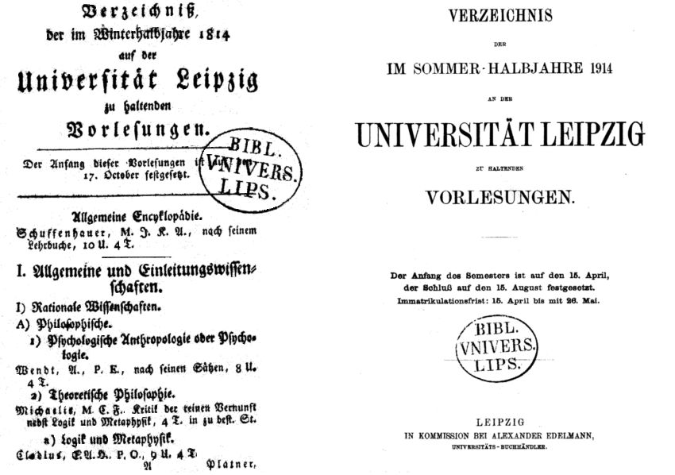
Bestandslücken in Leipzig
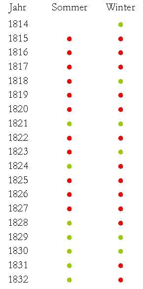
Verzeichnisse aus der Leipziger Literatur-Zeitung
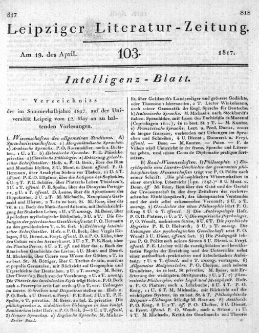
Unterschiede im Aufbau (1/4)
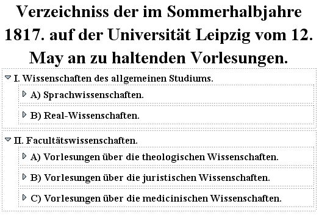
Unterschiede im Aufbau (2/4)
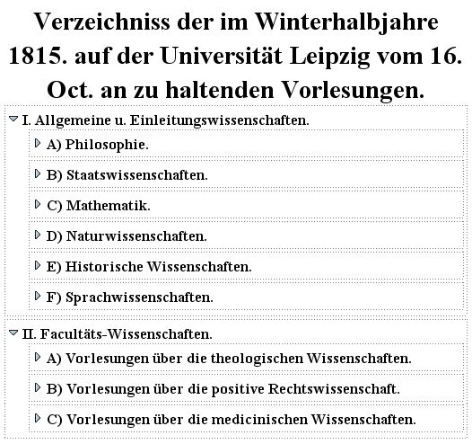
Unterschiede im Aufbau (3/4)
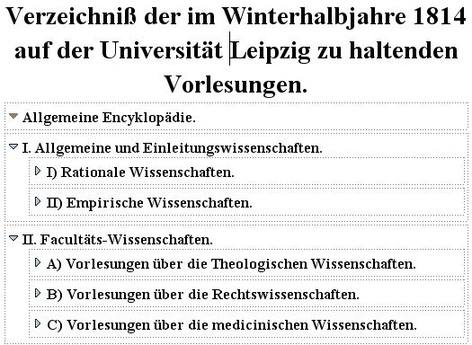
Unterschiede im Aufbau (4/4)
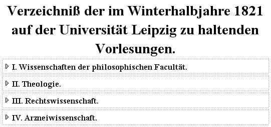
Anlage der Verzeichnisse (1/6)

Anlage der Verzeichnisse (2/6)

Anlage der Verzeichnisse (3/6)
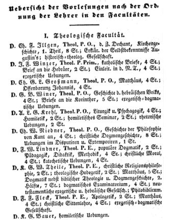
Anlage der Verzeichnisse (4/6)
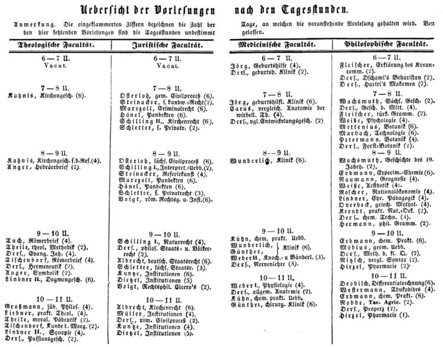
Anlage der Verzeichnisse (5/6)
Anlage der Verzeichnisse (6/6)
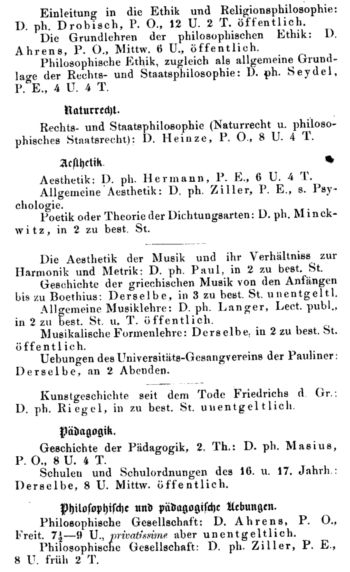
Inhalt
- Vorstellung der Quelle
- Technische Umsetzung im Projekt
- Technologische Vorentscheidungen
- Software-Architektur
- Dateneingabe
- Arbeitsorganisation
- Web-Applikation
- Arbeitsstand des Projekts
Technologische Vorentscheidungen
-
Open Source
- keine Lizenzgebühren
- individuelle Anpassung
-
XML
- besser als SQL, weil dokumentenorientiert
- kontinuierliche Weiterentwicklung möglich
-
leichtgewichtige Infrastruktur
- geringer Entwicklungs- und Pflegeaufwand
Software-Architektur

Software-Architektur: Dateneingabe
XML-Editor XMLmind

Applikation: Suchen


Applikation: Browsen


Applikation: Dozenten

Stand des Projekts
- Transkription
- Korrekturlesung
- Server
- Statistische Aufarbeitung (Grafik)


 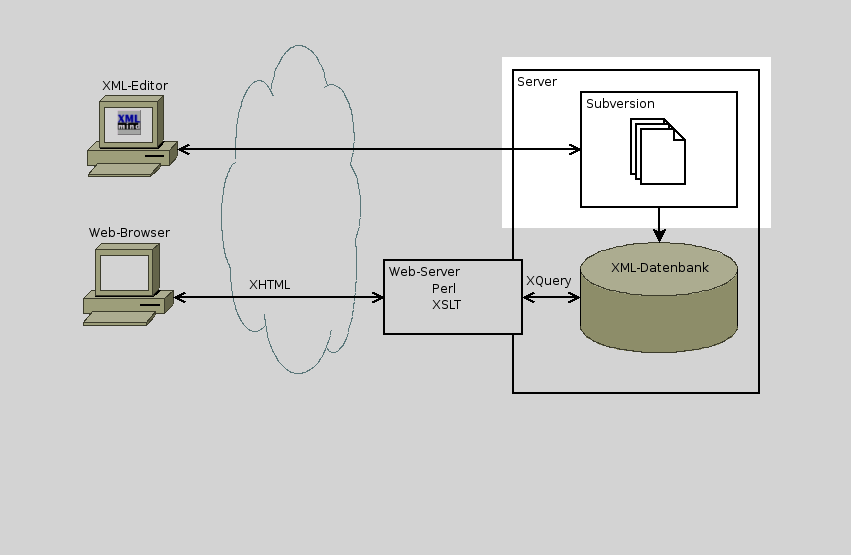
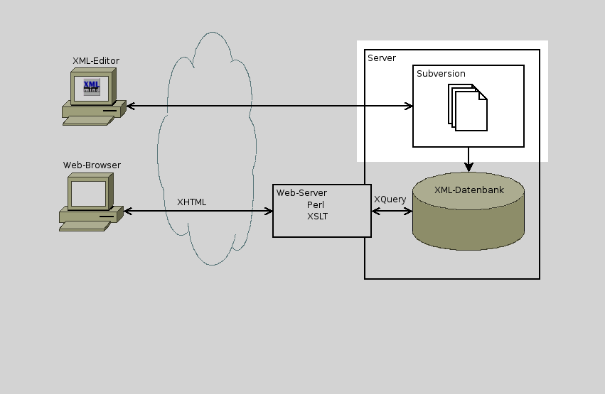